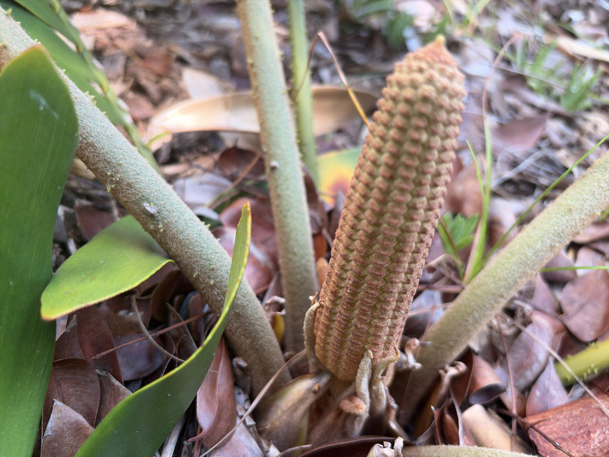

- It looks like a stiff, low palm or fern, but it is a cycad — an ancient seed plant from the age of the dinosaurs.
- The thick, leathery leaflets feel almost like cardboard, which is where the name comes from.
- Every part is highly poisonous to people and pets — the seeds especially can be deadly to dogs.
- Like all cycads, it partners with bacteria in special roots to pull nitrogen from the air, letting it thrive in poor soil.
Native to a small area of eastern Mexico (Veracruz). Despite its limited wild range, it is one of the most widely planted ornamental cycads in warm climates, including Florida.
- Cycads are living fossils — a lineage of seed plants that flourished alongside the dinosaurs and have changed little since. The cardboard cycad is one of the most popular in cultivation, prized for its low, symmetrical rosette of stiff, dark green, pinnate leaves whose thick, blunt leaflets have a distinctly papery, cardboard-like feel.
- Beneath the handsome looks is a serious hazard. Every part of the plant contains cycasin and related toxins, and it is dangerously poisonous to people, dogs, cats, and livestock. The seeds are the most toxic part and are a frequent cause of severe, often fatal poisoning in dogs that chew them.
- Cardboard cycad is pollinated not by wind but by a specialized snout weevil, Rhopalotria mollis, apparently introduced from Mexico alongside its host. The weevils complete their life cycle inside the aromatic male cones, feeding on pollen and cone tissue, and carry pollen to female cones as they move between plants — a tight, obligate partnership between plant and insect.
- The cardboard cycad's genus, Zamia, includes the only cycad native to the United States — the coontie (Zamia integrifolia), a Florida native and the primary host plant of the atala butterfly (Eumaeus atala).
- Atala larvae feed on coontie leaves and sequester the plant's cycasin toxins in their own bodies, making both caterpillar and adult butterfly unpalatable to birds — a chemical defense borrowed directly from the plant.
- Where coontie is scarce, atala butterflies have been documented using other ornamental cycads, including the cardboard cycad, as supplemental larval hosts.
- So while coontie is the cornerstone of the atala's recovery — it was nearly wiped out by over-harvesting for Florida arrowroot starch, almost taking the butterfly with it — a cardboard cycad growing nearby can offer additional footing for one of Florida's great conservation comeback stories.
Wildlife value is limited by the plant's toxicity. In its native range, specialized cycad-feeding insects and beetles pollinate the cones; the toxic seeds are not a safe food source for local wildlife and pets.
A low, stiff, palm-like cycad with a short, often partly buried trunk and a symmetrical rosette of leaves.
Pinnate, dark green, with thick, leathery, blunt, cardboard-textured leaflets; new leaves emerge in a flush.
By cones, not flowers; male and female cones on separate plants.
Borne in the female cone; large and highly toxic.
Start with the leaflets: pinch one gently — it should feel unusually rigid, thick, and blunt, more like heavy construction paper than a typical leaf. Next, look at the center of the rosette for new growth: emerging leaf flushes coil tightly and are dusted in a dense, rust-colored fuzz (the 'mealy' texture behind the species name furfuracea).
On mature plants, check the center for cones rather than flowers — male cones are narrower and cluster upright like fingers, while female cones are stout and barrel-shaped and, when ripe, yield the distinctive bright orange-red seeds. The cardboard-feel leaflet plus the cone (never a flower) is the definitive tell.
Every part of this plant is seriously toxic to people, dogs, cats, and horses — do not eat any part of it, and keep pets away from it entirely. The primary toxin is cycasin, a compound that causes liver failure; a second compound, beta-methylamino-L-alanine, causes neurological signs including seizures. The ASPCA notes that as few as one or two seeds can be fatal to a dog.
The bright orange-red seeds are the most dangerous part because they are attractive and contain the highest concentrations of toxin, but leaves, stem, and roots are also toxic. If a pet chews any part of this plant, contact a veterinarian or the ASPCA Animal Poison Control Center (888-426-4435) immediately.
The species epithet furfuracea is Latin for 'mealy' or 'scurfy,' describing the fine rusty fuzz that coats new growth and leaflets. The genus name Zamia derives from the Latin word for 'pine nut,' a reference to the cone-borne seeds shared by cycads and conifers.
Zamia furfuracea is listed as Endangered on the IUCN Red List, primarily due to decades of overcollection for the horticultural trade. Wild populations in Veracruz are now fragmented and small; nursery-propagated plants supply virtually all current commercial demand. Growing a legally sourced, nursery-propagated specimen contributes in a small way to reducing pressure on wild plants.
Observe and enjoy this plant safely. Because every part of the cardboard cycad is highly toxic — and the bright orange-red seeds are particularly conspicuous — please keep pets on a short leash and on established pathways when near this planting. If you are visiting with children, ask them to look rather than touch; the seeds should never be picked up or handled.


- © Ruby Meador (CC-BY-NC), via iNaturalist
- © Randall Carter (CC-BY-NC), via iNaturalist
- © Harrison Mello (CC-BY-NC), via iNaturalist